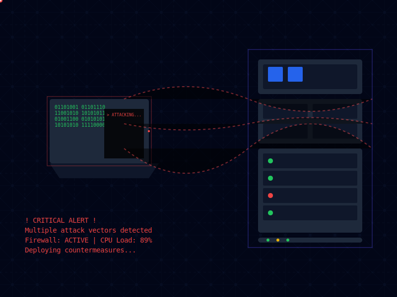
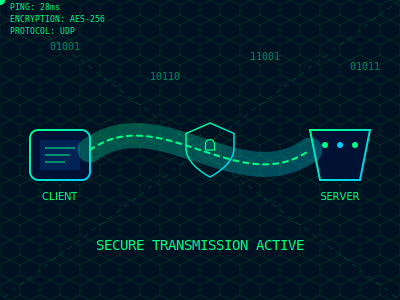

Nmap (Network Mapper) adalah alat open source yang sangat powerful untuk eksplorasi jaringan dan audit keamanan. Dikembangkan oleh Gordon Lyon, Nmap digunakan oleh administrator sistem dan profesional keamanan untuk menemukan host dan layanan di jaringan komputer, serta untuk mendeteksi potensi kerentanan.
Instalasi Nmap
Untuk menginstal Nmap di sistem Linux berbasis Debian atau Ubuntu, gunakan perintah berikut di terminal:
bash
sudo apt-get update && sudo apt-get install nmap
Untuk sistem operasi lain, kunjungi situs resmi Nmap untuk petunjuk instalasi.
Penggunaan Dasar Nmap
Berikut adalah contoh penggunaan dasar Nmap untuk memindai sebuah alamat IP:
Terminal
nmap 192.168.1.1
Perintah ini akan memindai alamat IP 192.168.1.1 untuk menemukan port-port yang terbuka. Nmap secara default akan memindai 1000 port yang paling umum digunakan.
Perintah Lanjutan Nmap
Nmap menyediakan berbagai opsi untuk pemindaian yang lebih spesifik dan mendalam. Berikut beberapa contoh perintah lanjutan:
Terminal
nmap -sV 192.168.1.1
- Mendeteksi versi layanan yang berjalan pada port-port terbuka
Terminal
nmap -p- 192.168.1.1
- Memindai semua 65535 port TCP
Terminal
nmap -O 192.168.1.1
- Mencoba mendeteksi sistem operasi target
Terminal
nmap -A 192.168.1.1
- Menjalankan pemindaian agresif (OS detection, version scanning, script scanning, dan traceroute)
Hydra Fundamentals
Tutorial Lengkap Hydra

THC-Hydra adalah alat pengujian keamanan open-source yang digunakan untuk menguji kekuatan password pada berbagai protokol dan layanan. Artikel ini akan membahas fundamental Hydra dan penggunaannya untuk keperluan pengujian keamanan yang sah dan beretika.
Catatan Penting: Penggunaan Hydra harus selalu dalam konteks pengujian keamanan yang legal dan beretika, dengan izin tertulis dari pemilik sistem yang diuji.
Fitur Utama Hydra
Mendukung lebih dari 50 protokol berbeda
Kemampuan multi-threading yang efisien
Fleksibilitas dalam penggunaan wordlist
Mendukung berbagai metode otentikasi
Dapat digunakan di berbagai sistem operasi
Cara Instalasi
Di Linux (Debian/Ubuntu):
Terminal
sudo apt update
sudo apt install hydra
Di Kali Linux:
Terminal
# Biasanya sudah terinstal
# Jika belum:
sudo apt install hydra
Selalu dapatkan izin tertulis sebelum melakukan pengujian
Gunakan dalam lingkungan testing yang terkontrol
Dokumentasikan semua aktivitas pengujian
Batasi jumlah percobaan untuk menghindari DoS
Enkripsi dan simpan hasil pengujian dengan aman
Tips Keamanan
Jangan gunakan di jaringan produksi tanpa izin
Selalu backup sistem sebelum pengujian
Monitor penggunaan resource sistem
Hapus log dan file temporary setelah selesai
Jaga kerahasiaan hasil pengujian
Kesimpulan
Hydra adalah tools yang powerful untuk pengujian keamanan password. Penggunaan yang bertanggung jawab dan sesuai etika sangat penting. Selalu:
Dapatkan izin tertulis
Dokumentasikan pengujian
Gunakan untuk meningkatkan keamanan
Patuhi regulasi yang berlaku
Ingat bahwa tujuan utama penggunaan Hydra adalah untuk meningkatkan keamanan sistem, bukan untuk mengeksploitasinya.
OSI Layer
Pengenalan OSI Layer
Model OSI (Open Systems Interconnection) adalah kerangka konseptual yang membagi proses komunikasi jaringan menjadi tujuh lapisan berbeda. Dikembangkan oleh ISO pada tahun 1984, model ini menyediakan standar untuk memahami aliran data dalam jaringan komputer, serta memecahkan masalah jaringan secara lebih efisien.
7 Lapisan OSI dan Fungsinya
Application Layer
Lapisan teratas yang berinteraksi langsung dengan pengguna. Menyediakan antarmuka untuk aplikasi seperti email, browser, dan FTP.
Protokol: HTTP, FTP, SMTP, DNS
Contoh: Membuka browser web atau aplikasi email.
Presentation Layer
Bertanggung jawab untuk format dan enkripsi data. Menangani kompresi dan dekompresi data, serta mengkonversi data ke format yang sesuai.
Contoh: JPEG, GIF, SSL/TLS
Session Layer
Mengelola sesi komunikasi antar aplikasi, seperti pembentukan, pemeliharaan, dan pemutusan sesi.
Contoh: NetBIOS, RPC
Transport Layer
Memastikan pengiriman data end-to-end yang andal, menangani segmentasi data, dan kontrol aliran.
Protokol: TCP, UDP
Contoh: Memastikan file yang dikirim sampai dengan utuh.
Network Layer
Menangani routing dan pengalamatan logis, serta menentukan jalur terbaik untuk pengiriman data.
Protokol: IP (IPv4, IPv6)
Contoh: Router beroperasi di lapisan ini.
Data Link Layer
Mengelola komunikasi point-to-point, mendeteksi dan memperbaiki kesalahan pada lapisan fisik, serta mengatur akses ke media transmisi.
Contoh: Switch dan Bridge bekerja di lapisan ini.
Physical Layer
Menangani transmisi bit mentah melalui media fisik, seperti sinyal listrik atau optik. Mendefinisikan karakteristik fisik jaringan, termasuk kabel, hub, dan repeater.
Contoh: Kabel dan Hub.
Cara Kerja OSI Layer
Proses komunikasi di OSI Layer melibatkan dua langkah utama: Enkapsulasi dan De-enkapsulasi.
Proses Enkapsulasi: Data bergerak dari Application Layer ke Physical Layer. Setiap lapisan menambahkan informasi header-nya sendiri, sehingga data terbungkus di setiap lapisan.
Proses De-enkapsulasi: Data diterima dari Physical Layer dan dibuka di setiap lapisan hingga mencapai Application Layer, kembali ke bentuk aslinya.
Manfaat Model OSI
Standardisasi: Menyediakan standar universal untuk komunikasi jaringan yang memungkinkan perangkat berbeda untuk berkomunikasi.
Modularitas: Memecah fungsi kompleks menjadi bagian yang lebih sederhana untuk memudahkan pengembangan dan pemecahan masalah.
Interoperabilitas: Memungkinkan perangkat dari vendor yang berbeda untuk bekerja sama dalam jaringan yang sama.
HTML Essentials
Pengantar HTML
HTML (HyperText Markup Language) adalah bahasa standar yang digunakan untuk membuat dan menyusun halaman web. HTML menggunakan elemen-elemen markup untuk menentukan struktur dan konten dari halaman web.
HTML adalah fondasi dari semua website yang ada di internet.
Elemen Dasar HTML
Tag HTML: Tag digunakan untuk menandai elemen dalam HTML. Contoh:
<p>
,
<h1>
.
Atribut: Atribut memberikan informasi tambahan untuk elemen HTML. Contoh:
<a href="url">
.
Konten: Konten adalah teks atau elemen lain yang terdapat di dalam sebuah tag.
HTML adalah bahasa markup dasar untuk membuat website. Dengan memahami elemen-elemen dasar, Anda dapat mulai membuat halaman web sederhana dan terus mengembangkannya dengan elemen yang lebih kompleks.
Selamat belajar dan bereksperimen dengan HTML!
CSS Fundamentals
Pengantar CSS
CSS (Cascading Style Sheets) digunakan untuk mengatur gaya dan tampilan halaman web. Dengan CSS, Anda dapat mengubah warna, font, layout, dan banyak elemen visual lainnya di halaman HTML.
CSS memungkinkan desainer web untuk memisahkan konten dari desain, memberikan lebih banyak kontrol terhadap layout dan penampilan halaman web.
Elemen Dasar CSS
Selektor: Digunakan untuk memilih elemen HTML yang ingin diberi gaya. Contoh:
p
,
#id
,
.class
.
Properti: Mengatur gaya atau atribut elemen. Contoh:
color
,
font-size
,
margin
.
Nilai: Menentukan nilai untuk properti. Contoh:
red
,
16px
,
10px
.
Contoh Struktur CSS
Berikut adalah contoh penggunaan CSS di dalam halaman HTML:
Inline: Menulis CSS langsung di tag HTML menggunakan atribut
style
. Contoh:
<p style="color: red;">...
.
Internal: Menulis CSS di dalam tag
<style>
di dalam
<head>
.
Eksternal: Menulis CSS di dalam file terpisah dengan ekstensi
.css
dan menghubungkannya dengan tag
<link>
di dalam
<head>
.
Contoh Halaman HTML dengan CSS
<!DOCTYPE html>
<html>
<head>
<title>Halaman CSS</title>
<style>
body {
font-family: Arial, sans-serif;
background-color: #f4f4f4;
color: #333;
}
h1 {
color: #2c3e50;
text-align: center;
}
p {
color: #555;
font-size: 18px;
}
</style>
</head>
<body>
<h1>Selamat Datang di CSS</h1>
<p>Ini adalah contoh halaman web dengan CSS terintegrasi.</p>
</body>
</html>
Kesimpulan
CSS memungkinkan Anda untuk mendesain halaman web secara visual. Anda dapat menggunakan berbagai properti CSS untuk mengubah penampilan elemen HTML. Selalu coba eksperimen dengan CSS untuk memahami berbagai cara mengontrol tampilan halaman web.
JavaScript Basics
Pengantar JavaScript
JavaScript adalah bahasa pemrograman yang digunakan untuk membuat halaman web interaktif. Dengan JavaScript, Anda dapat menambahkan elemen dinamis seperti animasi, validasi form, dan interaksi pengguna.
JavaScript berjalan di sisi klien (di browser) dan memungkinkan perubahan pada konten dan tampilan halaman web tanpa perlu memuat ulang halaman.
Elemen Dasar JavaScript
Variabel: Digunakan untuk menyimpan data. Contoh:
let
,
const
,
var
.
Fungsi: Sekumpulan kode yang dapat dipanggil dan digunakan kembali. Contoh:
function
.
Event: Aksi yang dilakukan oleh pengguna atau sistem. Contoh: klik tombol, hover mouse.
DOM (Document Object Model): API untuk mengakses dan memanipulasi elemen HTML di halaman.
Contoh Struktur JavaScript
Berikut adalah contoh menambahkan JavaScript ke dalam halaman HTML:
<script>
function greetUser() {
alert('Selamat datang di website!');
}
</script>
Penulisan JavaScript
Inline: Menulis JavaScript langsung di atribut elemen HTML menggunakan
Eksternal: Menulis JavaScript di dalam file terpisah dengan ekstensi
.js
dan menghubungkannya dengan tag
<script src="script.js">
.
Contoh Halaman HTML dengan JavaScript
<!DOCTYPE html>
<html>
<head>
<title>Halaman JavaScript</title>
<script>
function changeColor() {
document.body.style.backgroundColor = "lightblue";
}
</script>
</head>
<body>
<h1>Selamat Datang di JavaScript</h1>
<button onclick="changeColor()">Klik untuk Mengubah Warna Latar</button>
</body>
</html>
Kesimpulan
JavaScript adalah bahasa yang kuat untuk membuat halaman web interaktif. Dengan JavaScript, Anda dapat menambahkan fungsionalitas dinamis seperti form validation, manipulasi DOM, dan banyak lagi.
VPN Essentials
Pengenalan VPN

Apa itu VPN (Virtual Private Network) ?
VPN (Virtual Private Network) adalah sebuah jaringan komputer dimana koneksi antar perangkatnya (node) secara aman / terenkripsi dengan memanfaatkan jaringan public (Internet / WAN) di masing-masing site.
Contoh implementasinya adalah ketika kalian menjadi seorang Network Engineering yang sedang mengelola network yang terdiri dari beberapa kantor di lokasi yang berbeda. Tentu kantor - kantor itu harus saling terhubung, dan kalian sebagai Administrator jaringan harus mencari cara agar kantor - kantor ini bisa saling terhubung dengan biaya dan cara yang cepat dan efisien. Maka jika kalian kemudian membangun link atau jalur antar kantor dengan wireless atau fiber optic tentu ini akan membutuhkan banyak biaya, terlebih lagi jika kantor tersebut berada di kota atau bahkan pulau yang berbeda.
Nah dengan fitur VPN inilah kita bisa membangunn sebuah link / jalur antar kantor dengan memanfaatkan internet antar site (antar kantor). Dan tentu link atau jalur yang sudah dibangun dengan VPN harus diamankan dengan enskripsi sehingga meminimalisir kemungkinan data akan diakses oleh orang yang tidak bertanggung jawab.
Diatas adalah contoh kecil yang digunakan. Kita bisa melihat bahwa kantor Mataram dan kantor Sumbawa dapat saling terhubung lewat VPN (tipe IPSec). Tentu nanti kita akan belajar tentang tipe - tipe didalam VPN.
Jika kalian perhatikan, sesungguhnya kantor tersebut bisa saja saling terhubung lewat ISP atau Internet. Tentu jelas ini mungkin saja tidak aman dan bisa saja data - data yang kita kirimkan ke antar kantor di lihat atau bahkan di ambil oleh pihak yang tidak bertanggung jawab seperti Hacker. Maka dari itu kita menggunakan VPN agar koneksi antar kantor tersebut aman dan terenskripsi.
Cara Kerja VPN dan Fungsinya
Untuk lebih mendalami tentang VPN ini, kita harus tau cara kerja VPN secara garis besar. Pada dasarnya VPN bekerja dengan cara seolah-olah membuat jaringan didalam jaringan atau biasa disebut tunnel (terowongan). Tunneling ini digunakan untuk membuat jalur private dengan menggunakan infrastruktur pihak ketiga. VPN sendiri memakai teknologi tunneling antara lain adalah L2TP, PPTP, IPSec (Internet Protocol Security), dan masih banyak lagi. Dengan kombinasi tunneling dan enskripsi inilah maka terbentuk VPN.
Cara kerja VPN sederhananya adalah melakukan enkripsi pertukaran data bahkan sebelum koneksi publik di tempat kopi atau warung internet membacanya. Ketika terhubung dengan internet menggunakan koneksi VPN itu seperti mengakses internet menggunakan lorong khusus, tidak menggunakan jaringan utama.
Tentu fungsi VPN ini sangat banyak, namun tetap dimana ada kelebihan tentu ada kelemahannya juga. Ingat bro, ngga ada yang sempurna. Beberapa fungsinya adalah :
Pengamanan Data di Jaringan Publik
Mengamankan Informasi Pribadi Secara Anonim
Terenskripsinya Data
Mengurangi Biaya Infrastruktur Jaringan antar Site
Tipe - tipe VPN
Jika kita belajar banyak device vendor jaringan, tentu kita akan menemukan tipe VPN yang sangat banyak dan bervariasi. Pada dasarnya hampir semua jenis VPN itu sama disemua vendor, namun mungkin cara konfigurasinya yang berbeda - beda. Sebagai contoh PPTP di Mikrotik sama dengan PPTP Cisco, namun beberapa konfigurasi nya saja mungkin yang berbeda.
Sekarang saya pribadi akan fokus pada fitur - fitur VPN yang ada di Mikrotik. Mikrotik sudah men-support beberapa metode VPN seperti PPTP, L2TP, SSTP, OpenVPN, EoIP, dan IPIP (IP-in-IP). Dengan adanya beberapa opsi ini, kita perlu memilih tipe VPN yang cocok untuk jaringan kita. Secara umum semua tipe tersebut memiliki fungsi yang sama. Yang membedakannya adalah pada cara autentikasi dan enskripsi yang digunakan.
Ethernet over IP (EoIP)
Merupakan protocol pada Mikrotik RouterOS yang berfungsi untuk membangun sebuah Network Tunnel antar MikroTik router di atas sebuah koneksi TCP/IP. EoIP merupakan protokol proprietary MikroTik (support juga di linux tetapi harus di-compile manual). Maka untuk menggunakan fitur ini, router di kantor A dan kantor B harus sama - sama menggunakan router MikroTik.
Keuntungan dari EoIP (Ethernet over IP) memudahkan komunikasi jarak jauh layaknya satu jaringan tanpa perlu menggunakan pengeluaran banyak, lebih efisien dan hemat biaya. Dan kekurangan dari EoIP ini adalah masih rentan dalam keamanannya. Network kita bisa saja dapat terbaca karena jika melewati router yg berbeda, maka secara otomatis akan terbaca dengan jaringan tetangganya.
IP - in - IP (IPIP)
IPIP adalah salah satu alternatif selain menggunakan EoIP. Protokol IPIP berkerja dengan mengenkapsulasi paket data dari satu IP ke IP lain untuk membentuk network tunnel. Berbeda dengan EoIP yang hanya bisa digunakan untuk router yang sama - sama MikroTik, IPIP dapat berjalan hampir di semua jenis router selama router tersebut mendukung protokol IPIP. Akan tetapi, IPIP tidak dapat di-bridge sehingga jaringan lokal dibahwa router Kantor A dan Kantor B harus menggunakan segmen IP address yang berbeda.
Karena jenis ini tidak dapat di-bridge, maka akan menyebabkan kesulitan jika Kantor A atau Kantor B sudah terkonfigurasi network - networknya.
Point to Point Tunnel Protocol (PPTP)
PPTP merupakan salah satu type VPN yang paling sederhana dalam konfigurasi. Selain itu juga fleksibel. Mayoritas operating system sudah support sebagai PPTP Client, baik operating system pada PC ataupun gadget seperti android. Komunikasi PPTP menggunakan protokol TCP port 1723.
Pada setting PPTP, kita bisa menentukan Network Security Protocol yang digunakan untuk proses autentikasi PPTP pada Mikrotik seperti pap, chap, mschap dan mschap2. Kemudian setelah tunnel terbentuk, data yang ditransmisikan akan dienkripsi menggunakan Microsoft Point-to-Point Encryption (MPPE). Proses enskripsi biasanya akan membuat ukuran header paket yang ditransmisikan akan bertambah. Sehingga mungkin jika kita monitoring, traffick yang melewati tunnel PPTP akan mengalami overhead ± 7%.
PPTP ideal untuk penggunaan pribadi dan bisnis sebab mereka tidak perlu membelinya dan pemasangan perangkat keras ekstra dan fasilitasnya secara khusus dijajakan sebagai perangkat lunak tambahan yang tidak mahal. Namun sayang PPTP menyediakan enskripsi yang tidak secanggih L2TP dan kawan - kawannya.
Layer 2 Tunnel Protocol (L2TP)
L2TP merupakan pengembangan dari PPTP. Network Security Protocol dan enkripsi yang digunakan untuk autentikasi sama dengan PPTP. Akan tetapi untuk melakukan komunikasi, L2TP menggunakan UDP port 1701.
Namun untuk mendapatkan keamanan yang lebih baik, biasanya L2TP dikombinasikan dengan IPSec (Internet Protocol Security), sehingga sering disebut L2TP/IPSec atau IPSec. Contohnya untuk Operating system Windows, secara default OS Windows menggunakan L2TP/IPSec. Akan tetapi, konsekuensinya tentu saja konfigurasi yang harus dilakukan tidak se-simple PPTP. Sisi client pun harus sudah support IPSec ketika menerapkan L2TP/IPSec. Jika kita monitoring traffick yang melewati tunnel L2TP ini akan mengalami overhead ± 12%.
Dari segi enkripsi, tentu enkripsi pada L2TP/IPSec memiliki tingkat sekuritas lebih tinggi, karena menggunakan enskripsi IPSec daripada PPTP yg menggunakan MPPE.
Secure Socket Tunneling Protocol (SSTP)
Untuk membangun VPN dengan metode SSTP diperlukan sertifikat SSL di masing-masing perangkat, kecuali keduanya menggunakan RouterOS.
Komunikasi SSTP menggunakan TCP port 443 (SSL), sama hal nya seperti website yang secure (https). Anda harus memastikan clock sudah sesuai dengan waktu real jika menggunakan certificate. Manyamakan waktu router dengan real time bisa dengan fitur NTP Client. Sayangnya belum semua OS Support VPN dengan metode SSTP. Jika kita monitoring traffick yang melewati tunnel L2TP ini akan mengalami overhead ± 12%.
OpenVPN
VPN ini Biasa digunakan ketika dibutuhkan keamanan data yg tinggi. Secara default, OpenVPN menggunakan UDP port 1194.
Dibutuhkan certificate pada masing-masing perangkat untuk bisa terkoneksi. Untuk client compatibility, OpenVPN bisa dibangun hampir pada semua Operating System dengan bantuan aplikasi pihak ketiga. OpenVPN menggunakan algoritma sha1 dan md5 untuk proses autentikasi, dan menggunakan beberapa chiper yaitu blowfish128, aes128, aes192 dan aes256. Tentu dalam segi keamanan OpenVPN memiliki keamanan yang lebih bagus.
Kesimpulan
Perlu diingat, bahwa semakin kita membutuhkan sebuah jaringan yg aman, maka akan semakin kompleks konfigurasi yang perlu diterapkan, begitu juga dengan penggunaan resource hardware, semakin tinggi enkripsi yang digunakan, penggunaan resource, khususnya CPU juga akan naik.
Kesimpulan yang bisa kita ambil, jika Anda menginginkan VPN dg kompatibilitas perangkat client yg baik, maka PPTP bisa menjadi pilihan. Selain itu, PPTP juga bisa menjadi pilihan jika Anda tidak ingin terlalu repot untuk melakukan konfigurasi. Tetapi jika Anda menginginkan sebuah VPN dengan keamanan lebih bagus, gunakan L2TP/IPsec atau OpenVPN. Biasanya untuk OS windows, secara default menggunakan L2TP/IPSec, sehingga tinggal diseusuaikan pada sisi server. Jika memang perangkat Anda support dan Anda membutuhkan keamanan yg tinggi pada jalur VPN anda, L2TP/IPSec bisa menjadi pilihan. Satu hal yang menjadi catatan, penggunaan VPN tidak bisa meningkatkan bandwidth (lebih tepatnya mengurangi bandwidth anda karena ada penambahan headernya), tergantung dari besar bandwidth langganan anda.